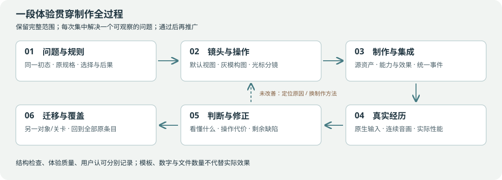

项目制作方法已接入（10月12日）：保留52包和331条设计，按实际体验施工，分别核对规则、原生输入、画面、动作和声音。读执行办法 · 执行数据 · 当前台账。结构检查通过不代表游戏或美术验收。
施工与验收：按完整体验交付，不按“写了几个功能”交付
10月12日用户补充的执行方式： 本段和后续环境建筑、棋盘静态单位均采用“设计图→低多边形实体→UV/贴图/材质→必要活动件”；标准动作先复用动作家族，定制重点是无牌天冲拳、体术机及招牌演出。接触按事件和共用参数近似表达，不制作双方单位逐对参数。当前B16 R2先把图先行的渠岸楼房及操作柜放回B/C实际画面，用相同操作源剪辑在不同骨架验证，再推广。旧精密接触证据保留作诊断，不能再作为全机逐对调校的理由；不改变预演/执行/回放、空间规则和全部52包范围。具体分工见02制作路线。
当前施工入口：通用方法与工务城主线分层（2026-10-12 R2）
完整范围仍为 52 个工作包及 331 条关联具体设计。本节只修订施工和核对方式，保留下面的原计划、现有主工程、主线程活动批次及历史证据；不表示游戏已完成整改。
执行数据见 制作流程.json，实际进展见 实施进度-20261010.json。旧文中的阶段/首关子集只决定先后，不缩减完整交付。
项目级方法： 遵循游戏制作方法与工程约定，其适用范围包含后续关卡、机体、交互和演出。这里的工务城安排是该方法的一次应用。现有规则/意图/效果接口继续复用，新增能力先说明来源，新增机制用另一对象或局面验证，HUD、动作与声音消费同一预测/结果。方法文件不表示相应工程改造已经实现。
任务主线： 主工程仍为game-godot、round_campaign.tscn及原启动器，规则仍为逐机回合。施工先形成下面“B区完整决策”这一段体验，再覆盖A、C、全员、人物及专关。当前批次、运行版本和具体步骤只读原台账的active_batch、runtime_version、production_focus；不在通用方法中复制。这次整合保留接入时的B16及B15未通过项，不替这些批次补写实测或认可。
开始或恢复时： 从项目根目录运行 python3 scripts/gongwu_production_flow.py preflight。读取当前台账的活动批次、实际未完成项、该包关联的原条目与最新美术标准。美术按 KINETIC_CEL/TACTICS 和真实目标图执行；旧工业地域题材保留，旧低饱和、玩具灰板口径不覆盖新标准。未经用户要求，不重开工程、重置别人的修改或把已可靠完成部分重做。
每批这样做：
- 接续
production_focus所指的完整体验和实际步骤，记录局面、输入、预期和原编号。原定造墙、钻击、射线/遮挡、坠落与跨区后果由下方六段依次覆盖；局部技术修复结束后回本段，不重新挑一个工程专题开批。 - 同时修规则、直接操作、棋盘后果、资产、动作和声音。正常镜头先解决主体、尺度、空间和材料分工，再补细节；同一缺陷连续两轮未改善，重查资产、构图或制作方法。
- 资产记录实际参考图、生成/既有来源、源图检查、模型/制作源、贴图/绑定、招式、运行加载路径、格位与显示规格、正常镜头检查和剩余问题。先审源图结构，再转三维；程序化构件、图生3D和既有合格资产按实际效果选择。
- 在当前交付工程实操：鼠标探索、选择、走位、瞄准、取消、风险确认、执行、撤回、敌方阶段、跨区、失败与成功。函数调用和脚本通关不冒充原生输入。
- 保存同局面同机位前后图、真实参考图、正常/快进/跳过连续动作及系统声音；具体写出可见变化、听到的问题和未通过项。规则预期来自原规格；不能让被测函数生成标准答案。
- 将本批准确缺口写回原台账，保留原合同。合格基准推广至全部场景、14台机体、招式和独立专关；不能在样板通过处结束。
检查怎样接入： 现有 scripts/run_gongwu_runtime_check.py 已在运行前核对制作来源、范围与入口，并绑定被测脚本/场景及明确列出的资产。动作时钟检查会将超出原规格的实际显示帧误差列为失败；60fps与30fps容差按第08册第59行分别处理，不能假报显示条件来通过。旧结果文件保留其原证据范围，不自动升级为新标准已通过。
填写和检查记录： 使用 python3 scripts/gongwu_production_flow.py template V04 --scope batch 获取未通过的空模板；填写真实证据后运行 python3 scripts/gongwu_production_flow.py review <记录.json>。文件引用使用项目相对路径及真实SHA256；运行证据保存在项目证据目录，不用即将失效的临时文件作为整包归档。每包需要的检查维度、原条目列表均在制作流程内。
新模板继续使用 review_format: 2，以 production_method_ref 绑定R2项目方法，以 experience_refs 引用实际批次经历与质量判断。用 experience-template 输出体验批次模板，并入当前批次报告即可；同一报告可以服务多个工作包，不要复制文档凑数。模板自身或原样复制不能作为已经进行的评审。
R2具体核对：visual.metrics提供真实图像上的指标、数值、单位、区域和依据（不是资产/测试计数）；assessment注明非作者评审者、实际媒体、具体发现及声音/动作时间段，玩法维度含三问实际回答。Q03人类首玩仍须人类，不能用独立模型代签。相机比较可声明comparison_kind=camera，明确相机变化并保持局面/分辨率/HUD相同；资产比较仍要求同机位。工具核对记录，不自行判断美感、重量或评审真实性。
preflight列出原台账的主线及两次有效失败后待换法项；缺陷存在不禁止运行修复检查。review会拒绝相关工作包在尚未实际换法时宣称通过；整包仍有共享缺陷也不能关闭。defect_ledger只记有证据的有效尝试，不从历史批次数或重复文案猜次数。planned与applied分开，后者需要实际制作证据。
在途迁移： 以当前台账为准，保留源码、原合同和既有证据。v1及旧方法v2记录保留历史意义；本次R2改变方法和检查条件，相关新评审须重新核对，不能仅刷新摘要宣称通过。原52包、331条来源、玩法数值与验收门槛没有删改；流程摘要变更只来自本次制作与审查规则。
整包记录使用 full_package，覆盖该包所有原条目和 WP:包编号 合同，不能仍有失败或未覆盖范围。通过结构核对并完成原规格审阅后，将记录的路径及SHA256登记到制作流程的 full_package_reviews。该登记不改变制作合同摘要；实现或源规格变化会使相应旧记录失效。python3 scripts/gongwu_production_flow.py delivery 检查52包是否齐备。
完成边界： preflight只说明入口、范围和来源结构有效；review和delivery只核对来源、覆盖及证据结构。文件存在、模型自评分和脚本通过，均不能自动签署好玩、美术、实听或用户认可。原计划的首玩要求没有被取消；没有进行就保留缺口。实验的去留仍按原设计对照，不为了“全做完”强塞进主流程。
本批汇报只回答：玩家可见变化、怎样验证、尚未通过什么、下一施工位置。流程回归检查为 python3 -B scripts/test_gongwu_production_flow.py；它使用临时测试数据，不启动Godot或改玩家存档。
10月9日第二轮补定： 首关数值/布局读07，动作/手感读08，人物/机魂读09，专关/成长/范围读10。下文完整扩展与首关子集分别验收；同名参数只保留一套当前值。
本册把前四册转换成可以实施和关闭的工作包。表中原计划状态与历史阶段说明保留来源意义；当前状态只读取实施台账及对应证据。报告的 ✅、◐、❌、— 不能复制成我们的完成状态。
首关子集按10册八节点依赖闭包推进。P02/P03/P05/R03进入首关的只有已列明部分；不因此要求先完成随机牌组。下表新增“结论档／证据／反例”，全部证据当前未提供。整包完成仍须覆盖其全量范围，首关子集通过不能替整包关单。
- 操作界面与体验维度：40条
- 美术场景与语义色：45条
- 动作节奏与打击反馈：66条
- 十八招与错误示意：46条
- 敌人战斗与综合建议：32条
- 高度机构与空地：41条
- 机体主体与系统恢复：39条
- 十条人物指令：10条
- 卡组与成长对照：12条
每条包含原因、采纳决定、具体规格、操作/画面、局面例子、验证反例及施工入口。


本节取代旧的“规则、美术、演出各自铺开再汇合”安排。接续当前有效成果，以一段玩家经历为集成单位。下列顺序保留全部52包及331条设计，不重置已经可靠完成的实现，不把尚未安排的条目改成范围外。
| 推进段 | 玩家实际经历 | 完成后用于检验什么 |
|---|---|---|
| B区完整决策 | 发现桥受威胁→比较推移/保护/跨区切线→执行→敌方阶段兑现预测→看懂剩余条件 | 正常镜头、城市与桥渠体量、光标预览、连续动作和跨区因果能否一起成立 |
| A区供能与重装 | 接电、推移/坠落、2×2飞行走位与钻击 | 相同规则与交互在不同尺寸、材料和战术压力下复用 |
| C区清路与列车 | 比较爆破/直射/吊运，处理友伤，观察列车跨区前进 | 多对象效果、线路状态、不同损失与连续运输是否清楚 |
| 全员及不同编队 | 全部可选机体、原定招式、敌人和增援进入实际战局 | 换机体改变选择；身体/装备/抗性与招牌表现一致；不同谱系不共享一套假动作 |
| 人物与系统配合 | 原规格中的机魂、人物指令、合体、七海、名场面与对手 | 能力有身份依据；费用、条件、反提案和演出形成完整链路；本段涉及的人物表现从前面开始集成 |
| 全范围专关与迁移 | 高差、空地、燃料、成长等原定专关/对照及其他任务 | 通用规则能迁移；既定实验按原条件裁决，全部包按原范围核对 |
性能、字体与符号可读性、输入响应、减少动效及回归贯穿所有推进段，不推迟到末尾。已存在的专关保留入口和证据；顺序改变不意味着删除或不再验证。上表是施工组织，逐项验收仍按下方52包与原条目。
B区内部按以下次序制作，不把所有内容塞成一次无边界的大批次：
- 固定相同初态下不作为与替代方案的合法性、费用、阶段结果和下一轮状态，先纠正纸面解法，再用于画面预览。
- 在正常决策镜头完成灰模构图；确认机体、建筑、桥渠、可走区域和威胁，随后细化材质与资产。镜头比例/删字/描边的新建议先比较，不直接覆盖第07/08册既定要求。
- 完成“发现威胁—走近顶推—接触与位移—攻击取消—敌方阶段兑现”这一条连续体验，连同实际输入、环境、声音与帧率检查。
- 接入造墙的实体生成与C切线的跨区结果，证明同一呈现与交互框架能解释不同效果；复用当前已完成的制作件，修正仍未过项。
- 检查相关机体招牌、短对白和人物能力；形成可推广基准后，迁移到后续推进段。当前台账中的规则、动作、声音与原生输入缺口逐项接入，不能因重排计划消失。
B区例子校正： 按第07册，盾2是消耗池，面对先后3与2伤实际损伤为1与2，桥4剩1；市政工机只有击毁才计损失；吊运当前要求合法承重落点，不能把吊入深渠作为已支持路线。攻击后的剩余移动、固定格意图和后续阶段也必须计入解法。Fable的四解图用于提出比较，不替代规则验证；多条合法路线还要检验是否有真实取舍。
本任务的专业制作工序： B区先采用正常镜头灰模/布局源组织真实渠壁、桥锁、街边现代楼群和板外连续地面；再制作/接入分材质kit与atlas。预算造墙按取件、抛出、展开、落地、固定、收势、残留的七轨分镜，真实剪辑事件驱动墙、声音和规则。C隔离刀操作要能看见A炮停火、B桥伤害取消及来源。具体数值沿第07/08册与当前规则，不照搬审查例子中的旧数值。
审查的单位占屏25–30%、机体墨线2.5–3.5px、环境高彩面积≤5%、单位高彩面积15–25%、HUD常驻≤40字符，列为本任务比较起点，与当前标准和实测并列；不是全项目固定值。每项须在正常画面试验、记录取舍和剩余问题，不能用“尚是候选”无限保留旧状态。B16已有按局面取景及描边对照，继续使用这些结果，不从旧固定距离重新开始。状态截图、实际投影/线宽/色分工/HUD量测与非作者三问共同判断。
当前代码职责入口（均在game-godot/scripts/formula_lab/linked_campaign/，只描述接续位置）：
| 职责入口 | 接续方式 |
|---|---|
rounds/tactical_contract.gd、round_rules.gd |
复用能力、合法性、模拟与效果，不按剧情名字加通用能力 |
rounds/round_data.gd、round_operation.gd、mission_rules.gd |
局面、目标和跨区依赖配置，保持一份规则引擎 |
rounds/round_cursor.gd、round_overlay.gd、tactical_feedback.gd、round_hud.gd |
同一结果组织探索、选中、瞄准与执行反馈；HUD逐步转可编辑组件 |
rounds/round_world.gd、环境布局/kit/材质源 |
先构图和材料分工，再装配；相机、几何、读题物件一起检查 |
v6/action_sequence.gd、action_library.gd、action_audio.gd |
实际剪辑、挂点、产物、环境和声音共用事件，不继续靠数值摆姿势生产新招 |
与本段无关的性能微调、菜单扩展、装备角度穷举和新实验保留在原范围待办；遇到有证据的输入/帧率阻断时处理并回主线。以上是施工安排，未制作的街区、动作或音效不能因此写成已完成。
2. 工作包与依赖
每项指定负责专业而非虚构人员。相同文件由一个集成人顺序整合；资产与独立规则局面可以同时制作。下表由本目录数据生成，完整验收句与实现入口见 TSV/JSON。
0 · 留存与复现
| 工作包 / 负责专业 | 交付内容与范围 | 验收重点与反例 | 证据与结论 | 完整包依赖 |
|---|---|---|---|---|
| Q01 版本、来源与复现基线 测试/设计 |
版本快照、报告局面存档、13项复现分类、原素材索引 结论档：首关依赖 首关子集：版本、六机身份、装备/费用与出席配置 |
现状与建议分开；每项有输入步骤和可观察结果；进程退出保留日志必须保留的反例旧进程版本与配置hash不一致；复现仍使用旧截图。必须拒收，不能拿本次文档替代运行版本。 |
留存修改前文件、运行配置与本次验证日志。 查看实现证据。 完整包未关闭。 |
— |
1 · 可信的一手棋
| 工作包 / 负责专业 | 交付内容与范围 | 验收重点与反例 | 证据与结论 | 完整包依赖 |
|---|---|---|---|---|
| F01 动作效果与费用合同 规则开发/战斗设计 |
明确伤害、位移、拘束、吊运等动词；统一最终装备解析、阶段费用 结论档：首关依赖、全量／对照 首关子集：版本、六机身份、装备/费用与出席配置 |
拘束不标推；模块与释放同步四种说明；重命名单位不改结果必须保留的反例把拘束改名为重击、单位改ID；原结果不变，不能因名字切换到推移或多扣弹药。 |
六机18招的费用、效果、准备与释放按同一命令验证。 查看实现证据。 完整包未关闭。 |
Q01 |
| F02 身体规格、移动与承重 规则开发/关卡 |
完整脚印、质量、净空、移动方式、合法落点与平滑路线数据 结论档：首关依赖、全量／对照 首关子集：统一结果、损失分账、冲突、合法路线、接口与传输 |
1×1/2×2/3×3绕路、飞越、落位、换形全部使用同一检查必须保留的反例2×2只有三格有支撑、3×3仅中心净空；均不能落位。绕行可达不能因默认直路受阻而禁止。 |
1×1/2×2/2×1完整足迹、承重与移动；跨区列车的车头也可成为目标。 查看实现证据。 完整包未关闭。 |
F01 |
| F03 意图绑定和公开阶段 规则开发/敌人设计 |
发布前规划、稳定顺位、世界落点/方向/接触/架设绑定 结论档：首关依赖、全量／对照 首关子集：统一结果、损失分账、冲突、合法路线、接口与传输 |
所有公开意图按同一阶段模拟；移位旋转后行为符合已显示承诺必须保留的反例推开接触型敌人、旋转相对炮口、移动世界锁定目标；三者按各自绑定，不能全部追踪原对象。 |
意图公开、推移保方向、移离架位取消、防空一轮一次。 查看实现证据。 完整包未关闭。 |
F01 |
| F04 因果事件、预测和快照 规则开发/呈现开发 |
事件来源、父子链、前后值、规则版本；预演执行回看共用 结论档：首关依赖 首关子集：统一结果、损失分账、冲突、合法路线、接口与传输 |
同快照同命令结果完全一致；跳过/快进/回放终态一致必须保留的反例同快照预演100次、快进一次、回放一次；若最终HP、费用或rng有任一差异，不通过。 |
预演与结算复用模拟；真实事件支撑宿敌学习和七海证据，预演不写事实。 查看实现证据。 完整包未关闭。 |
F01、F03 |
| F05 任务连接与结算合同 规则开发/任务设计 |
目标图、设施损伤与城防损失分离、工作/运输/到达阶段 结论档：首关依赖 首关子集：统一结果、损失分账、冲突、合法路线、接口与传输 |
换区号和设施ID可运行；城防来源和致败事件可逐项追溯必须保留的反例桥HP4承受来袭5：实际损4，首次失效城防减2；不能把5当城防损失，也不能修桥倒赚城防。 |
24人、18段东行、6轮截止；单场保护目标和运输链按配置计算。 查看实现证据。 完整包未关闭。 |
F04 |
| F06 能力、接口与动作资格 规则开发/机体设计 |
工具、权限、资源、供能、邻接、持续作业状态及取消规则 结论档：首关依赖、系统恢复专关 首关子集：统一结果、损失分账、冲突、合法路线、接口与传输 |
无焊具不能维修；当前编队拥有至少一条公开可行任务路线必须保留的反例撤下焊具再点修复；原地给缺工具原因、不走过去扣移动，不凭故事需要临时长出焊枪。 |
手部、备件、承重、飞行、回执与组件条件决定资格。 查看实现证据。 完整包未关闭。 |
F01、F02 |
| U01 鼠标与快捷键状态机 交互开发/UX |
自由探索→选中默认移动→技能瞄准；风险才确认；Ctrl手势独占 结论档：首关依赖 首关子集：鼠标直操、只在风险时确认、语义预览、撤回回看和Ctrl镜头 |
普通安全行动无层级选单；Ctrl拖拽零误下令；Enter/右键/Space无抢焦点必须保留的反例Ctrl左拖跨过友机、普通左键点格、右键退瞄准、Enter焦点在按钮时各测；Ctrl绝不发移动命令。 |
保留鼠标探索、左键行动、右键退出；Ctrl鼠标只操作相机。 查看实现证据。 完整包未关闭。 |
F01 |
| U02 合法目标与统一走近 交互开发/规则开发 |
所有动作统一求出手格、路线、落位与失败原因；两段吊运 结论档：首关依赖、全量／对照 首关子集：鼠标直操、只在风险时确认、语义预览、撤回回看和Ctrl镜头 |
攻击/支援/控制/调度入口一致；失败不先走半路扣资源必须保留的反例走近途中最后一格被占；整个命令失败且费用不变，不先走半路再报技能不可用。 |
点设施自动寻找合法接近点并完成一步操作；七海柜体根据状态给出当前动作。 查看实现证据。 完整包未关闭。 |
F02、F06、U01 |
| U03 棋盘后果和招式图示 UI开发/视觉设计 |
真实脚印、范围、血槽闪烁、推落/碰撞、取消威胁、来源分层 结论档：首关依赖、全量／对照 首关子集：鼠标直操、只在风险时确认、语义预览、撤回回看和Ctrl镜头 |
18招卡面/棋盘/执行一致；知道本招取消了哪条伤害必须保留的反例同一发会撞墙、伤友军、取消远区炮；三项都须画在实际对象上，不能只剩箭头和文字总数。 |
保留伤害、位移、取消威胁的同源预演，追加航空迫降与层筛选。 查看实现证据。 完整包未关闭。 |
F04、U02 |
| U08 指针性能与显示残留 性能开发/测试 |
状态版本缓存、取消过期预演、按需小舞台、模型/虚影隔离 结论档：首关依赖 首关子集：鼠标直操、只在风险时确认、语义预览、撤回回看和Ctrl镜头 |
p95悬停≤50ms、选择范围p95≤80ms目标；10格快速划过无旧结果覆盖必须保留的反例0.5秒划过10格后点另一机；迟到预览不能覆盖新对象，idle和行动结束不得有残影闪烁。 |
复用显示路径并重新校验真实消耗与新障碍；300次悬停p95由68.392ms降至10.373ms，30次选择p95为51.888ms。Ctrl点击、普通点选、移动与撤回已在原生窗口复查。 查看实现证据。 完整包未关闭。 |
F04、U01 |
| A01 美术基准与三地色稿 美术主责/关卡美术 |
同机位昼/夜/霓虹色稿；选择有色中明度工业主版；材质和光照标准 结论档：首关依赖、全量／对照 首关子集：六机和三面美术子集，READ-A/B/C题面可读；非12机构全部 |
关闭HUD仍有结构材质；不沉闷、不大片白、不统一染机体必须保留的反例关HUD、正常战棋距离；靠全场发白或同色机体才能辨物则失败，不以局部特写代替。 |
重新按原配色和材质对照重做：A鼠尾草绿/铜、B灰紫/矿物青水、C瓦红/褪蓝站台；独立玻璃、矿物、涂层与金属材质，机体涂装不染色。 外围站棚、厂房、吊机与货箱也采用同一角色色板；中性补光避免统一偏蓝。；按10月10日新视觉标准修订规范、场景色板与HUD，重绘三张剧情背景。 查看实现证据。 完整包未关闭。 |
Q01 |
| A04 HUD美术组件与图标 UI美术/UX |
头像、技能卡、状态、威胁、任务、播放条统一组件与tokens 结论档：首关依赖、全量／对照 首关子集：六机和三面美术子集，READ-A/B/C题面可读；非12机构全部 |
不用原生绿色线框；缩放/灰度仍清楚；选中不整盘染色必须保留的反例UI125%和灰度下悬停图标、长机名；不得裁掉预算/风险，不能高亮整个棋盘掩盖目标。 |
复用美术HUD，新增任务特有的图形状态链和部件血槽。 查看实现证据。 完整包未关闭。 |
A01 |
| V01 演出时钟和播放控制 呈现开发 |
世界、连续FX、UI、音频时钟类别；倍率、暂停、跳过终态 结论档：首关依赖、全量／对照 首关子集：18招/15图/输入时点/音画/来源正确的通讯切入 |
无漏停Tween、音频不中断；所有轨道按意图同步必须保留的反例首个Tween启动前暂停，再快进/跳过；无残留子轨、二次伤害或漏结束音。 |
18招接触/结果/输入恢复时钟接入事件播放；没有独立演出胜利脚本。 查看实现证据。 完整包未关闭。 |
F04 |
| R01 14台机体能力配置 机体设计/战斗设计 |
身体、装备、招式、质量、移动与资源的单位无关配置 结论档：首关依赖、全量／对照 首关子集：版本、六机身份、装备/费用与出席配置 |
14台各有独到解法与代价；同样规则能用于新名字新机体必须保留的反例替换为新ID但保留装备/能力；结果相同。14机中出现无装备依据的通用维修即退回。 |
14台候选配置复用原资源；本版主要验证六机和七台招牌，不等同14台完整动作验收。 查看实现证据。 完整包未关闭。 |
F01、F06 |
| P01 人物与机体身份数据 人物设计/规则开发 |
驾驶/同乘/独立机魂/双主体、岗位、适配来源与出席状态 结论档：首关依赖、系统恢复专关、全量／对照 首关子集：版本、六机身份、装备/费用与出席配置 |
人物和权限符合当前Canon；未明确身份不自作主张补事实必须保留的反例给预算填虚构驾驶员、把CH048提前当C03到场；身份校验必须拦下，不能由UI补Canon。 |
通讯人物与实机分离，七海本人不出现在本关；勇拳核心不冒充独立机魂。 查看实现证据。 完整包未关闭。 |
R01、Q01 |
2 · 整场可读可操作
| 工作包 / 负责专业 | 交付内容与范围 | 验收重点与反例 | 证据与结论 | 完整包依赖 |
|---|---|---|---|---|
| F07 地形、状态与连锁组合 规则开发/战斗设计 |
敌我设施通用的盾、推拉、火水电、标定、残骸、失能与救援 结论档：首关依赖、全量／对照 首关子集：统一结果、损失分账、冲突、合法路线、接口与传输 |
多格去重、盾后推落、保全敌人、环境链、失能恢复均有可读结果必须保留的反例有盾敌被推入深水；盾不能防坠落。多格对象被一个爆心覆盖四格，不能按格重复受伤。 |
护盾/护群/标定/推撞/水面/殉爆使用通用效果；不靠剧情强制胜利。 查看实现证据。 完整包未关闭。 |
F02、F04 |
| U04 分层HUD和对象检查 UI开发/UX |
简洁常驻目标与行动状态；悬停简卡、I详情、风险短卡 结论档：首关依赖 首关子集：鼠标直操、只在风险时确认、语义预览、撤回回看和Ctrl镜头 |
默认不需阅读大段文字；无0/2歧义、面板遮住芯片或全身小头像必须保留的反例无选择、悬停、选中三态；若普通待机就出现规则长文或全身缩略图当头像，直接退回。 |
首关精简目标链；系统局分别显示部件、权限或宿敌状态。 查看实现证据。 完整包未关闭。 |
U03、A04 |
| U05 切区、调度与远区后果 交互开发/任务设计 |
棋盘内调度、预留落位、源到目标联动、跨区剩余行动提示 结论档：首关依赖、全量／对照 首关子集：鼠标直操、只在风险时确认、语义预览、撤回回看和Ctrl镜头 |
一次点击定位另一边威胁；到达时间和容量可知；在途不会消失必须保留的反例目的泊位塌落、备用位被占；在途机体显示等待和原因，不能消失或刷回移动/主行动。 |
三面共享回合；真实转场、等待抵达与飞行快速转移，单场不显示不存在的战场。 查看实现证据。 完整包未关闭。 |
F05、U02 |
| U06 撤回、回放与失败定位 交互开发/呈现开发 |
移动撤回、完整回合重置、分段回放、全量日志与致败来源 结论档：首关依赖、全量／对照 首关子集：鼠标直操、只在风险时确认、语义预览、撤回回看和Ctrl镜头 |
撤回无资源复制；暂停在首段可用；L开关一致；跳过保留同终态必须保留的反例连续撤回、回放、结束回合再重置；不得复制精神、弹药、卡牌或贡献奖励。 |
沿用撤回/回看，试演独立结算不刷战役资源；新存档命名隔离。 查看实现证据。 完整包未关闭。 |
F04、U01、V01 |
| U07 部署与第一回合引导 UX/关卡设计 |
14台完整可选、能力建议与替代方案、跟编队走的局部引导 结论档：首关依赖、系统恢复专关、全量／对照 首关子集：鼠标直操、只在风险时确认、语义预览、撤回回看和Ctrl镜头 |
不同编队不出现无牌固定提示；首回合有有效操作；可自由切三区必须保留的反例把推荐无牌换成其他合法机体；提示必须跟编队，不能仍要求点不存在的无牌。 |
默认六机出击、可选试演与局前对白；本版说明和目标按当前配置。 查看实现证据。 完整包未关闭。 |
F06、U04 |
| U09 可访问性与多输入适配 UX/测试 |
字号缩放、色觉形状通道、减少动态、按键重绑；阶段4触控验证 结论档：首关依赖、全量／对照 首关子集：鼠标直操、只在风险时确认、语义预览、撤回回看和Ctrl镜头 |
无需依赖颜色区分规则；Ctrl相机保留；触控不强迫改坏桌面操作必须保留的反例关闭颜色信息后辨可达/敌意/推落；Ctrl手势只改镜头，触控适配不能把桌面点击又变成拖转。 |
本版未实施此完整工作包；保留原稿设计与后续出口。 查看尚未实施范围。 完整包未关闭。 |
U01、A04、V01 |
| A02 十二类场景资产及损毁 场景美术/技术美术 |
逐资产几何、风格化贴图、三态损毁、交互连接；可合批模块 结论档：首关依赖、全量／对照 首关子集：六机和三面美术子集，READ-A/B/C题面可读；非12机构全部 |
12类全部有交付；视觉占地与规则一致；桥不是贴图、设施受损可辨必须保留的反例桥断电、未对齐、结构受损三个独立状态；不能同用一张红色贴图，点击范围须匹配实体。 |
Blender制作15型×3实体状态；居民楼按5/6/7层重做，实际缺角、楼板塌损；电柜、货柜等改成实体破损。完整包仍需全局视觉验收。；按10月10日新视觉标准修订规范、场景色板与HUD，重绘三张剧情背景。 查看实现证据。 完整包未关闭。 |
A01、F02 |
| A03 全员3D、轮廓与尺寸 角色美术/绑定动画 |
14台常规机体模型贴图骨骼质量复核；敌种剪影；头像与状态 结论档：首关依赖、全量／对照 首关子集：六机和三面美术子集，READ-A/B/C题面可读；非12机构全部 |
无二维战棋替身；王者真2×2；默认视角区分敌种与机体；脚底不漂必须保留的反例旋转机位看全部单位背面/落脚；二维面片翻面、王者视觉四格而规则单格均失败。 |
腿架、背肩已拆成带UV/骨架的独立GLB；核心与完整机身仍为结构样本。 查看实现证据。 完整包未关闭。 |
A01、F02、R01 |
| V02 待机、连续移动和关节 动画/技术美术 |
逐机Idle、连续步伐/飞行、手型、回旋踢髋膝脚、受力收势 结论档：首关依赖、全量／对照 首关子集：18招/15图/输入时点/音画/来源正确的通讯切入 |
正常镜头能看见动；直路连续、弯路不穿墙；无反关节残影必须保留的反例连续直路、障碍拐角、斜视踢腿；不能格格停顿、穿墙、支撑脚不转而膝反折。 |
修正悬浮/下沉，保留连续路径与既有骨骼动作。全招关节自然度未完成人类验收。 查看实现证据。 完整包未关闭。 |
F02、V01、A03 |
| V03 伤害、弹道、推撞和连锁 特效/动画 |
五类命中、遮挡停点、护盾/真伤差异、碰撞双方、坠落 结论档：首关依赖、全量／对照 首关子集：18招/15图/输入时点/音画/来源正确的通讯切入 |
强效果可见而不遮下一手；大小单位受力不同；结果格与动画一致必须保留的反例盾吸收、推不动、第一格撞墙、油火二次爆；受力与终点正确，不播放不存在的长推。 |
本版未实施此完整工作包；保留原稿设计与后续出口。 查看尚未实施范围。 完整包未关闭。 |
F07、V01 |
| V04 产物、结构损坏和残骸 特效/场景美术 |
部署/展开/落地/固定产物；设施三态；装饰与规则残骸分开 结论档：首关依赖、全量／对照 首关子集：18招/15图/输入时点/音画/来源正确的通讯切入 |
墙有来路、桥有受力、失能可救；规则残骸影响寻路与清理必须保留的反例墙生成中暂停、桥受损后掉构件、机体失能；模型隐藏不等于规则对象删除。 |
桥面复位、制动架退出、组件合分由真实对象状态驱动。 查看实现证据。 完整包未关闭。 |
F07、V01、A02 |
| V05 声音层次和反馈音 声音设计/音频开发 |
动作/材质/低频/尾音采样、轻随机、环境与音乐层次、输入反馈 结论档：首关依赖、全量／对照 首关子集：18招/15图/输入时点/音画/来源正确的通讯切入 |
系统录音实听；连续5次不机械；峰值无削波、低音不盖关键信号必须保留的反例录系统声连续同招5次；分辨启动/接触/材质，峰值削波、低频盖住危险提示即失败。 |
本版未实施此完整工作包；保留原稿设计与后续出口。 查看尚未实施范围。 完整包未关闭。 |
V01 |
| V06 18招及其余机体动作集 战斗动画/特效/声音 |
本册每招脚本、招式卡真实小场景、其余8机招牌动作 结论档：首关依赖、全量／对照 首关子集：18招/15图/输入时点/音画/来源正确的通讯切入 |
普通/快进/连续三种录屏；18招效果可复述；规则与演出相符必须保留的反例18招逐个普通、快进、连续播放；拳/掌/手刀混用或各招同一挥臂，不因通关就算通过。 |
首关18招沿用动画并接独立时钟；新增合分与升降事件。未宣称全机动作资产完成。 查看实现证据。 完整包未关闭。 |
V02、V03、V04、V05 |
| V07 人物通讯与名场面呈现 剧情演出/UI美术 |
先修编队发言与立绘比例并恢复短演出；阶段5对接精神与名场面，预留同一事件入口 结论档：首关依赖 首关子集：18招/15图/输入时点/音画/来源正确的通讯切入 |
无离场角色冒充；对话不抢鼠标；跳过后状态相同必须保留的反例移走说话者或跳过通讯；离场头像不能冒用，跳过后次数/对象/结果保持相同。 |
七局短场景与实际触发的通讯；未完成所有专属分镜/语音。 查看实现证据。 完整包未关闭。 |
P01、V01、A04 |
| E01 敌人发布前规划 敌人设计/规则开发 |
合法命中模拟、危险评分、角色目标、稳定顺位和环境利用 结论档：首关依赖、全量／对照 首关子集：三道题/波次/同城方向/2×2与两形态子集；不含全卸装或全高度机构 |
连续3轮无初始假威胁；改变玩家选择不会使已发布敌人偷偷追击必须保留的反例公开射线后移开目标；敌人不能临时转向重选。下一轮重新发布时才可适应。 |
固定题面意图与下一轮公开状态；宿敌仅学习过去发生的接力。 查看实现证据。 完整包未关闭。 |
F03、F07 |
| R02 形态、装备与合体 机体设计/角色美术 |
王者四装备和卸装、货柜载具、雷翎/歌翼形态、组件连续性 结论档：首关依赖、系统恢复专关、全量／对照 首关子集：三道题/波次/同城方向/2×2与两形态子集；不含全卸装或全高度机构 |
无免费复制装备/行动；净空扫掠和残留部件规则齐全必须保留的反例卸装/合体/分离后再合、同回合反复变形；唯一部件和行动不复制，已花移动不回满。 |
真实组件合分、伤势保留、唯一肩炮卸装；正式卸装机身造型仍待制作。 查看实现证据。 完整包未关闭。 |
R01、F02、F06 |
3 · 三战场值得调度
| 工作包 / 负责专业 | 交付内容与范围 | 验收重点与反例 | 证据与结论 | 完整包依赖 |
|---|---|---|---|---|
| E02 敌种、增援与保全身份 敌人设计/角色美术 |
外敌/工机、防空、护群等组合；波次来源/上限/堵口/撤退公示 结论档：首关依赖、全量／对照 首关子集：三道题/波次/同城方向/2×2与两形态子集；不含全卸装或全高度机构 |
敌种一眼可辨；出生后不提前行动；保全对象有非致死解法必须保留的反例出生点堵一轮、持续堵两轮、地面塌落；延后/取消按公开规则，新生敌不当轮偷打。 |
首关三批增援，阻点延迟与坑洞取消；拆桥工机允许沟通保全。 查看实现证据。 完整包未关闭。 |
E01、A03 |
| E03 压力、奖励与多解平衡 战斗设计/测试 |
救援/保全/清场对照；城防调参；任务贡献计奖、防刷 结论档：首关依赖、全量／对照 首关子集：三道题/波次/同城方向/2×2与两形态子集；不含全卸装或全高度机构 |
至少三种编队能通关；难度来自取舍非结构性失血；无隐藏损失上限必须保留的反例高火力全杀与保全控制都实跑；若只有唯一工程机能过或隐藏损失封顶保人，不通过。 |
不作为与有效六手有不同结果；签名/机械两条许可解法。尚无玩家平衡结论。 查看实现证据。 完整包未关闭。 |
E02、L01 |
| L01 三战场布局重做 关卡设计/场景美术 |
每区有效交战区、2×2通路、目标和危险邻接、绕路、第一轮选择 结论档：首关依赖、全量／对照 首关子集：三道题/波次/同城方向/2×2与两形态子集；不含全卸装或全高度机构 |
每区首轮有有效干预；不是强制8×8；工程/战斗/调度均有路线必须保留的反例任一区不作为再结束回合；实际代价可见；换编队仍有公开路线，不靠万能互动按钮补救。 |
按R1固定重排10×8三面：供电/跨渠/装卸，各自保护对象和关键接口。 查看实现证据。 完整包未关闭。 |
F05、F07、U02 |
| L02 全城空间和任务联动 任务设计/场景美术 |
C→B→撤离口一致方向；A供能；真实共用柱环/管线；总览定位 结论档：首关依赖 首关子集：三道题/波次/同城方向/2×2与两形态子集；不含全卸装或全高度机构 |
供能与行车剩余条件可见；远区后果一次点击可定位；列车不反向必须保留的反例列车从C向东跨B，切区后仍向东；断敌炮专线不能顺便关闭公共母线。 |
C在西B在东，实际轨道连续，公共母线/敌炮馈电分开。 查看实现证据。 完整包未关闭。 |
L01、U05、A02 |
4 · 立体与空地组合
| 工作包 / 负责专业 | 交付内容与范围 | 验收重点与反例 | 证据与结论 | 完整包依赖 |
|---|---|---|---|---|
| S01 多面高度和支撑基础 空间规则开发 |
surface位置、路径层间边、承重图、离散高度与坠落 结论档：首关依赖、全量／对照 首关子集：三道题/波次/同城方向/2×2与两形态子集；不含全卸装或全高度机构 |
双层点选正确；大脚印/载荷/连锁无悬空穿透；高度UI一致必须保留的反例载荷跨两层、脚印一角失撑；选择正确结构面并派生坠落，不能按中心格假悬浮。 |
真实水渠、桥面承重、0/2航空层。不是完整任意多层空间。 查看实现证据。 完整包未关闭。 |
F02、F04 |
| S02 遮挡、层选择和相机 呈现开发/UX |
自由镜头＋吸附、剖切、局部透视、遮挡轮廓、层选择 结论档：首关依赖、全量／对照 首关子集：三道题/波次/同城方向/2×2与两形态子集；不含全卸装或全高度机构 |
不转镜头也知道致命威胁；不把所有建筑半透明；多层不误选必须保留的反例致命敌意在桥下；不旋转也有定位标记，透明处理仅遮挡物，不把全场都幽灵化。 |
上层检修板和居民楼支持局部剖切，保留实体支撑结构；楼后机体点选与剖切复原已做实际运行检查。 查看实现证据。 完整包未关闭。 |
S01、U09 |
| S03 吊机、升降和隧道 机构规则/场景动画 |
档位、扫掠、载重、净空、通道容量、备用落位及撤回 结论档：全量／对照 首关子集：不进入首关施工子集 |
起终点及途中都合法；出口堵塞不软锁；跨区载荷不消失必须保留的反例吊物终点空但途中撞梁，隧道出口被占；拒绝或等候，不瞬移穿越、不永久软锁。 |
吊运和升降检查载重、净空、承重和整片落点；隧道堵出口后可等待或合法撤回入口，撤回不返还本轮移动。机构演出和全场覆盖仍未关闭。 查看实现证据。 完整包未关闭。 |
S01、S02、F06 |
| S04 顶升、塌落、桥底与堆箱 结构规则/场景动画 |
临时支撑到期、锚点破坏、下层攻击、坠落砸物、边缘护栏 结论档：全量／对照 首关子集：不进入首关施工子集 |
完整预演所有结构后果；不重复伤害；支撑期限不隐藏必须保留的反例临架到期时上面有载人机；预告真实失撑和避险路径，不能到期直接删模型。 |
上下层经真实楼梯边相连；失去支撑会坠落，少数格悬空的伤害按支撑变化只结算一次，重复检查不持续扣血。桥底、堆箱及全部转交局仍未完成。 查看实现证据。 完整包未关闭。 |
S01、S02、V04 |
| S05 跨区射线、转台、水位和观测 空间规则/任务设计 |
全城LOS、绑定随旋转、水位区域、未来条件信息 结论档：全量／对照 首关子集：不进入首关施工子集 |
旋转不乱改世界目标；两区水位影响同屏可查；预言不冒充已承诺必须保留的反例转台转90度而炮锁世界格；方向/目标按绑定区分；远区涨水受影响对象须同时显示。 |
跨区架炮受C专线控制，桥路受A母线控制；未声称全部机构上线。 查看实现证据。 完整包未关闭。 |
S01、S02、F03 |
| S06 空地层与反制 战斗规则/敌人设计 |
空域/净空、武器对层、起降、公开防空反应、失能迫降、燃料对照 结论档：首关依赖、全量／对照 首关子集：不进入首关施工子集 |
起飞前可知挨打；烟与风分清；没有合法落位时按明确后果结算必须保留的反例燃料不足又无合法落位；预演显示迫降后果，不能到结算才淹死或无成本悬空。 |
0/2层目标筛选、起降、防空架位、燃料A/B、确定迫降。 查看实现证据。 完整包未关闭。 |
S01、S02、E02 |
| S07 七种空对地动作与投送 装备设计/动画 |
俯冲/投弹/覆盖/扫射/空撞/抓取/观测；快运与载客 结论档：首关依赖、系统恢复专关、全量／对照 首关子集：不进入首关施工子集 |
能力来源可查；完整占地落位；到达不刷行动；高处观测不叠加必须保留的反例投送2×2到只有三个空格的泊位；不能压缩脚印，更不能到达后刷一轮免费主行动。 |
俯冲、投弹、覆盖、扫射、空撞、抓取、观测都有独立命令和状态后果；屋盖拦截、整片迫降足迹和实际落层通过检查。逐招演出与玩家比较仍未完成。 查看实现证据。 完整包未关闭。 |
S03、S05、S06、R02 |
5 · 人物与机体身份
| 工作包 / 负责专业 | 交付内容与范围 | 验收重点与反例 | 证据与结论 | 完整包依赖 |
|---|---|---|---|---|
| R03 七台重点招牌规则 机体设计/战斗设计 |
六机首关招牌最小集和R03七机后续合同；18招/FX/遮名题一一对应 结论档：首关依赖、系统恢复专关、全量／对照 首关子集：只实现SPIRIT-1/4、配置A共用实例、社勇免费意愿与六机招牌最小集 |
不靠强制空等制造差别；共享动作仍有不同成本与受力方式必须保留的反例遮名六机辨识、雷翎连续轮开火、审批错误工具；不可用强制空等或随机变工具冒充梗。 |
七台各有一局实际题面，规则不同、局面与解法见第11册。 查看实现证据。 完整包未关闭。 |
R01、R02、P01 |
| P02 八条精神与两条扩展 人物玩法/交互开发 |
10条固定合同、出席表、次数/阶段/目标/结果字段/失败句及P02专关；R1只启用1/4 结论档：首关依赖、系统恢复专关、全量／对照 首关子集：只实现SPIRIT-1/4、配置A共用实例、社勇免费意愿与六机招牌最小集 |
费用与效果可预演；基础信息免费；七海不能代城市授权必须保留的反例无本人签名/本地回执时用七海撤令；不能解全城锁；无出席人物不得使用其能力口吻。 |
纪存沟通、七海归档/核验、豪司一次强化接入；未关闭十条精神全集。 查看实现证据。 完整包未关闭。 |
P01、F04、F06 |
| P03 确定性人物调度令 人物玩法/交互开发 |
确定卡字段与三入口共用实例；P03整局扣次/取消/离场验证，不依赖P04 结论档：首关依赖、全量／对照 首关子集：只实现SPIRIT-1/4、配置A共用实例、社勇免费意愿与六机招牌最小集 |
不刷新免费行动；换人物改变可选方案；与棋盘操作相连必须保留的反例头像与目标快捷入口同帧提交同能力；仅扣一次且仅有一份回执，无第二套余额。 |
同一人物指令可从人物页与情境目标提交，成功才扣本战次数。 查看实现证据。 完整包未关闭。 |
P01、F04、U04 |
| P04 随机卡组与成长对照 系统设计/测试 |
16实例/6种子/三模式对照、CARD01–12手顺；6/14XP与三关经济曲线；依据门槛做去留裁决 结论档：全量／对照 首关子集：不进入首关施工子集 |
不靠抽牌才能救援；重置不刷牌；新增点击实际测量；给出去留结论必须保留的反例空手牌照样救援；seed4101预演100次仍同牌；若额外点击超过预定门槛不得宣称采纳。 |
实验入口已接16个实例、冻结种子、牌库持久化、实际贡献结算、6/14经验解锁、模块购买/装备、卡牌收藏/替换/升级/移除与重复领取防护。完成一条R5救援流程及68项回归；三关经济及玩家A/B去留结论尚未完成。普通R1仍固定装备。 查看实现证据。 完整包未关闭。 |
P02、P03、E03 |
| P05 机魂意愿、关系和换乘 人物玩法/规则开发 |
四态ConsentResult和Command反提案；社勇首关快照＋后续意愿专关；未明身份不虚构 结论档：首关依赖、系统恢复专关、全量／对照 首关子集：只实现SPIRIT-1/4、配置A共用实例、社勇免费意愿与六机招牌最小集 |
提交前条件全公开；不随机反悔；无资源/行动循环；至少两种人物编队不同打法必须保留的反例预览同意后落点被占、有人仓被改为损伤目标；旧token作废，不能执行时再随机说不。 |
社勇王拒绝伤及居民，撤掉错误命令后可换侧完成任务；无失败即扣次。 查看实现证据。 完整包未关闭。 |
P01、P02、P03 |
| P06 名场面、气势与有名对手 人物设计/敌人设计/演出 |
事件台词、非击杀贡献、名场面条件、命名对手候选与公开阶段 结论档：首关依赖、系统恢复专关、全量／对照 首关子集：不进入首关施工子集 |
真实事件触发且不刷贡献；人物在场一致；不推进封存正式剧情必须保留的反例友伤后维修、反复立拆墙刷气势；同root_event不重复计，台词不能推进未接受的故事事实。 |
断冠真实观察两机接力、下轮公开单次减伤；换向可破解。 查看实现证据。 完整包未关闭。 |
P05、R03、V07 |
6 · 全量集成验收
| 工作包 / 负责专业 | 交付内容与范围 | 验收重点与反例 | 证据与结论 | 完整包依赖 |
|---|---|---|---|---|
| L03 第二任务与组合验证 关卡设计/测试 |
救援主版、立体变体、战斗压力关；多杀/借刀/保全/调度案例 结论档：全量／对照 首关子集：不进入首关施工子集 |
换任务及对象ID不改核心规则；各任务至少两种不同代价解法必须保留的反例第二任务换区名、目标和装置ID；不得改引擎按故事名字判胜，两种代价路线均可完成。 |
七个招牌局和六个系统局均复用通用规则，并各有合法通关路径。 查看实现证据。 完整包未关闭。 |
L02、E03、S07、P05 |
| Q02 一致性、迁移与性能测试 规则测试/性能测试 |
可重复局面、预演/执行/回放对比、旧存档、模型与输入回归 结论档：首关依赖 首关子集：五类实机证据＋通讯/意愿反例＋六机盲辨；未提供以前保持待实施 |
全部承诺的规则矩阵通过；性能有实测；规则版本迁移无静默错配必须保留的反例任意预演/执行差异、旧存档无规则版本、过期缓存覆盖；必须留下失败输入，不只给pass汇总。 |
保留首版378项和14条解法；本轮补2068项通用规则、173项机制集成、68项成长检查；45个实体模型、遮挡、三面实机渲染通过运行检查。 查看实现证据。 完整包未关闭。 |
L03、P04、P06、V06、U06 |
| Q03 首玩、画面、声音与操作验收 体验评审/美术/声音 |
无提示首玩、录屏音频、正常镜头同位对照、缺陷修复复测 结论档：首关依赖、全量／对照 首关子集：五类实机证据＋通讯/意愿反例＋六机盲辨；未提供以前保持待实施 |
玩家能说出目标与这一手后果；操作不靠讲解；美术和声音独立检查必须保留的反例无口头提示新人无法指出目标与这一手后果；即使全自动通关、截图漂亮也不得认定可玩。 |
10月10日原生窗口重新检查Ctrl点击、模型点选、移动预算4→0及Z撤回4；成长菜单采用运行时界面检查，因原生UI工具未能点击，不算人工完成整个成长流程。未签署玩家首玩、美术或音效验收。 查看实现证据。 完整包未关闭。 |
Q02 |
3. 13 项 bug 的处理口径
| 报告编号 | 复现与整改 | 关闭条件 |
|---|---|---|
| BUG01 调度死路 | 用社勇王与不同脚印验证整个交接动作，不只验证“能向入口走一格” | 整条调度合法才推荐；不够时在移动前给原因，不扣错移动 |
| BUG02 “纪存”疑似错字 | 当前 Canon 已核对，姓名就是纪存 | 标为报告疑点已澄清，不改成记存或改写角色身份 |
| BUG03 “先移动”误导 | 覆盖距离、工具、权限、资源、占地、堵路、目标层 | 原因来自实际失败项；能走近时给完整方案，不能时不骗玩家 |
| BUG04 自动走近不一致 | 当前已有 approach 函数，检查所有调用入口、蓄力释放与 2×2 站位 | 攻击/维修/支撑/控制器/调度/吊运一致；释放不重新选错自己的格 |
| BUG05 敌方过快 | 同一回合录带时间轴的视频，分清动作与附属事件 | 首段有时间暂停，普通与重大事件速度不同，快进仍能看懂 |
| BUG06 直接跳失败页 | 在城防 1 的局面复现跨区致败 | 棋盘明确显示 1→0 的对象和原因；可回看，然后才进入结算 |
| BUG07 “损失1”无对象 | 区分市政工机、设施耐久、城防、列车、我方失能 | 结算可点到对象与事件；单位和量纲完整 |
| BUG08 变形被当近战 | 按真实形态合同生成卡片，不靠 visual 默认值回落 | 形态前后能力和净空可见，不显示攻击目标箭头 |
| BUG09 日志截断/不能按L关 | 当前代码与报告版本不同，重新核对实际日志、过滤和开关键 | 所有重要事件可查，L/Esc 行为一致，不能把代码行数当实机证据 |
| BUG10 离场馆守台词 | 开局和事件台词按实际编队/岗位与发言者来源选择 | 14台不同编队抽样无错配；馆守不在场不说现场动作台词 |
| BUG11 设施误伤无确认 | 危险对象集合含友机、保全工机、设施、护送车与支撑结构 | 导弹波及避难点、推落工机、断桥害车都同级预警；安全动作仍一击执行 |
| BUG12 总览遮芯片 | 覆盖窗口大小、系统缩放、宽屏、弹窗/总览叠加 | 无遮挡重要操作与死区；安全边距由布局而非硬编码坐标解决 |
| BUG13 Godot退出 | 收集退出码、Godot日志、系统报告、内存与运行步骤 | 有证据才写根因；未复现保留复现状态，不能假称已修或归咎用户 |
4. 规则测试矩阵
测试不照抄实现函数，而是验证玩家承诺。每例给定公开状态、玩家输入、预计结果和实际结果，预演与执行独立对照。
| 测试组 | 代表情况 |
|---|---|
| 目标与效果 | 拘束不停火；吊运两阶段；维修缺损1/3；护盾给敌人；墙挡射线与挡路；多格单位面积伤害去重 |
| 射线与范围 | 双炮两线、贯穿两体、扇面三格、中心爆破与四邻吹离、第一阻挡物、不同高度与跨区边界 |
| 位移与支撑 | 轻重力量阈值、第一/第二格碰撞、推落、护栏先破后推、2×2半面支撑、临时台到期 |
| 状态与费用 | 准备到释放、弹药不双扣、作业中断、临时支撑消失、失能救援、机魂提交前拒绝 |
| 行动顺序 | 已承诺敌意受位移影响、转台带方向、增援不插队、敌敌误伤、环境→工程→运输顺序 |
| 跨区 | 容量预留、堵出口等待/改派、空运到达不刷新行动、供电先后、目标区永久损毁 |
| 循环与存档 | 火电连锁去重、卸装不复制、变形不刷移动、牌堆不因重置重抽、旧规则存档提示/迁移 |
| 通用性 | 换机体名称/对象ID/区号、第二任务换目标、相同能力施加敌/友/设施，结果不依赖关卡专用分支 |
自动回归使用能覆盖这些边界的小局面；完整战役做多个真实输入的通关回放。纯脚本能求解只能证明规则有解，不能证明玩家会玩。
5. 操作验收：真实键鼠，全流程计数
记录从部署到首次有效干预、完成一条跨区链路、结束回合和失败/成功结算的完整视频。不能用直接调用函数代替鼠标体验。
| 检查 | 判据 |
|---|---|
| 自由探索 | 不点击也能查对象与敌意；I详情不挡鼠标目标；关闭后位置不跳 |
| 一次行动 | 选机→光标路线→点击移动；选技能→看后果→点击执行；安全操作无强制重复确认 |
| 风险与取消 | 友伤、保全损失、断桥等确认留住棋盘；右键逐层退出且不撤销别人的行动 |
| 相机 | Ctrl按下/中途松开/鼠标越过UI/滚动组合均不产生意外命令；镜头恢复可用 |
| 顺手切换 | 点击地图模型可选机，1–4选招，Q/E可跳到仍有行动单位，跨区选机不漏动 |
| 性能 | 记录目标设备、分辨率、FPS和p50/p95延迟；快速扫格不显示过期预演；连续移动无逐格卡顿 |
| 播放 | 暂停、单段检查、1×/2×、跳过均可用；结束时模型与结果同步，无半透明躯干残留 |
首玩观察先不给口头讲解。询问“现在最危险的是什么”“这一步为什么救到了桥”“还有哪边没处理”，并让玩家指盘面，不要求背专业术语。初始评审目标可用 5 名未参与实现者中至少 4 人在第二回合前做出有效目标操作；没有独立测试者时必须写“未做首玩验收”，不能由熟悉代码的自测代替。此计划不自动授权向外部联系人发消息或安排测试。
6. 美术、声音和机体表现单独验收
| 项目 | 必交证据 | 不能用什么替代 |
|---|---|---|
| 场景完成度 | 三地同样镜头：关HUD、正常HUD、受损后；12类资产清单与原图来源 | 放大局部的精细纹理、宣传封面、纯调色 |
| 机体质量 | 14台模型/贴图/绑定/头像/动作表；尺寸档和大脚印对比 | 一张正面截图、二维贴片、只修推荐六台 |
| 动作与手型 | 18招及其余招牌动作正常速度全程；拳掌手刀、髋膝与支撑脚近景 | 只有最大冲击的一帧、每招共用整体平移 |
| 效果与规则 | 血槽、护盾量、位移、碰撞、失能、残骸、链路取消的对应录像 | “FX模块已接入”、测试数字没有视觉证据 |
| 声音 | 系统音频录制；输出音量基准；重复五次与连锁片段；音乐/环境/动作混音 | 未录音的视频或文件夹中存在wav |
| 可访问性 | 默认/低震动/减少动态/色觉与字号缩放对照 | 只有一个强度滑条，没有验证实际效果 |
普通伤害、失能和击毁不能只靠同一个白闪区分；没有伤害的拘束、维修也不能套爆炸。旧拳王拳击与无牌体术必须能从预备、重心、轨迹、收势看出区别。
7. 每个扩展都有进入和退出条件
| 扩展 | 进入条件 | 如果没有达到预期怎么办 |
|---|---|---|
| 双层结构 | 核心单层预演与点击可靠，目标层能准确选择 | 继续修层选择和剖切；不能用隐藏桥底敌人凑谜题 |
| 空中层 | 低空移动与2×2已稳定，有一张同时验证防空/地面反制的局面 | 调整起降和射线规则；不直接加燃料逼玩家落地 |
| 燃料 | 空中层已好玩，确实需要补给取舍 | 对照证明只增加记账则不进入主版，保留试验结论 |
| 机魂拒绝 | 人物身份正确，反提案可预演，不阻碍基本规则理解 | 缩少触发类型，改为公开额外收益/代价，不随机夺控制权 |
| 随机牌堆 | 确定调度令已清楚，且能说明随机性增加了哪种选择 | 采用确定版；不以“都做了”强塞随机系统 |
| 巨型3×3 | 2×2足够成熟，有适配地图与大范围动作 | 留在专用验证任务，救援主图不强行容纳 |
| 有名对手/合体 | 身份、形象、组件来源和任务用途已核对 | 先完成候选设计，不写进正式Reader或替代已接受剧情 |
这些不是“暂缓到以后”的空栏：对应工作包必须交付可运行试验、测得的影响和选用结论。必要的基础修复、全部资产和既有招式没有这种可选退出口。
8. 主要风险与控制
- 范围膨胀。 52 个工作包中，修复/完善与新增验证分别追踪；随机牌堆、燃料和巨型关不是首关必须同时展示的功能。每阶段交一条完整链路，防止同时铺几十个半成品。
- 旧规则混入。 拍数、回合、主行动和动画时长分别迁移；每个保存的承诺带规则版本。禁止把旧字段改个中文名就继续用。
- 状态与演出分叉。 结果先由规则确定，演出表现该结果；粒子、骨骼、相机没有资格改变伤害/落点。跳过后必须到同一快照。
- 性能掩盖体验。 选中卡顿先记录剖析；别用删动画、删几何或大面积降低机体精度来遮盖重复计算。
- 美术又变成一套颜色。 每区材料和功能不同，机体涂装独立；共用的是制作质量与信息层级。正常镜头逐资产审，不只看远景气氛。
- 剧情与权限误写。 本工作包是独立 gameplay Candidate。纪存姓名、七海身份、馆守残臂、有人机/机魂归属以当前权威表为准；不动已接受Reader。
- 存档和测试分支污染。 新规则使用独立版本与测试存档；保留原版可回看。不删除用户当前存档，也不把对照实验设置默认为正式规则。
9. 什么叫“这一轮全部做好”
所有强制整改项都有实现、规则验证、真实输入体验和可查看的视觉/听觉证据；可选提案也有完整原型结论，没有“先略过”空项。报告中不成立的疑点注明原因，未复现的缺陷保留状态。
交付包括：可运行版本与启动入口、三套完整任务、全 roster 资产/动作清单、预演与结算对照、真实键鼠录屏、声音片段、首玩观察和遗留问题。不以文件多、测试多、通关一次作为满意的替代品。
本次只完成计划；后续每个工作包再登记实际实现版本、测试结果与体验结论。用户明确不想接手低完成度中间件，因此阶段检查以内部完整体验检查为主，不能再把找明显问题的工作甩给用户。